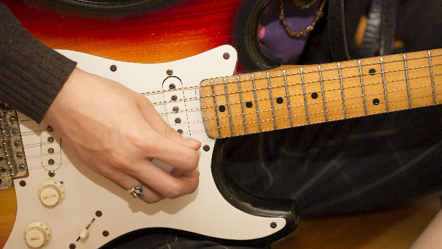

このブログのメカニズムとして、私が本文を書くと編集担当が綺麗なウェブページに直してアップしてくれる仕組みになっています。そんなわけで、どんな画像が挿入されるかは私もアップされたものを見たときに初めて知るのですが、前回の記事の挿入イメージを見て少し驚きました。なぜなら、ギターの画像が、私が今最もほしくて最も手を出せないギターであるストラトキャスターだったからです。
ストラトキャスターは、フェンダーというアメリカのメーカーが作ったエレキギターの機種です。一般の人がエレキギターときいてイメージする映像といえばこれ、というくらい有名ですから、皆さんもどこかで見たことがあるでしょう。
このギターはとても鋭くきらびやかな音を奏でるため、プロも数多く使用しています。私もこのギターを愛用している多くのミュージシャンのファンとして、是非とも自分で弾きたいと思い、楽器屋さんに行くと時折試奏するのですが、その度に惚れ込み、財布に手が伸び、悩み抜いた末に、あきらめます。
私を毎度の衝動買いから救ってくれるものは、「鏡」です。このギター、座って弾いているときはとても弾きやすく音もいい。重さもそれほどではなく、総合的なプレイアビリティにすぐれているのですが、なんというか、「大きい」のです。座っていると気にならなくても、立って弾いてみると一目瞭然。鏡に映る自分の姿は、大人のギターを弾いている子供、といった感じで、なんともちぐはぐな感じを受けます。私の体はそれほど大きくありませんが、身長170センチ程度なのでおそらく日本人男性の平均的な体型でしょう。にもかかわらず、なにか微妙に大きい…。映像で欧米のミュージシャンが弾く姿を見ると、見事に調和しているのに、自分には微妙に大きい…。かくしてこのストラトキャスターは、楽器なのに音とは全く関係ないところであきらめざるをえないという、私にとって因縁のギター。
ストラトキャスターの大きさを見ていると、「エレキギターはやはり欧米の文化なんだなぁ」としみじみ感じます。日本で作られる音楽の多くは今やエレキギターなしには成り立たないくらいに浸透しているため、普段意識することはありませんが、こんなときふと思い出されます。
そんな感慨にふけりながら自分の本業を振り返ってみると、最近流行の「双方向型授業」になんとなくこのストラトキャスターに似たものを感じます。もう何年も前から、欧州で主流のディベート中心授業を日本に根付かせようとする動きはありました。今では批判の的になっているいわゆる「ゆとり教育」もこれまでの教授中心の授業から脱却しようとする動きの一部であったといってよいでしょう。そして、2020年入試改革以降の動きも基本的にはこの方向で進むことになっています。しかし、この欧米直輸入の双方向型が当たり前のように「よいもの」とされているところには、少し違和感を覚えるのも事実です。生徒同士あるいは生徒と教師が議論を重ねながら知を作り出していくという形がはたして日本人の風土にフィットするのか、不安はぬぐいきれません。たとえば、議論に使われる日本語一つをとっても、言葉自体が強い言い方をすれば敬語に「汚染」されています。相手を「おまえ」というか「あなた」というか「きみ」というか、あるいは代名詞を使って呼ぶか呼ばないかまで含めて、話し手同士の関係性が染みこんでいるのですから、ただ純粋に（話題の背後に話者を見ずに）議論を進めることがいかに難しいかが分かります。
私自身生徒たちと双方向型授業を行ったことが何度もありますが、なんとなく議論の「形」を作ることはできても本当に議論をしているのかと言われるとどうもしっくり来ないことがほとんどでした。生徒たちも構えて「あなた」を使い、言葉を“それっぽいもの”に変えて話すものですから、どうにも「議論の演技」をしている感じがぬぐえず、自然なやりとりとはほど遠いものでした。かといって、普段通りの言葉遣いで始めると、途端に感情論になってしまう…。もちろんこれは私自身の運営スキルの問題が大半でしょうが、それ以外にも「どうせ議論をしたところで何も得られない」という暗黙の雰囲気を講師・生徒問わずどこかで持っていたような気もします。
とはいえ、ではどうすればよいのかと言われれば私にも今のところ案はありません。今後双方向型授業がどんどん導入されていくなかで、なにか日本にフィットした形が生まれればよいなと希望を持っています。私にとってストラトキャスターは技術的にも身体的にも文字通り「身の丈に合わない」ものですが、双方向型授業が日本人にとっての「体にフィットしない」ものにならないよう祈ります。